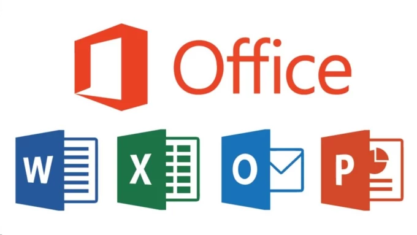
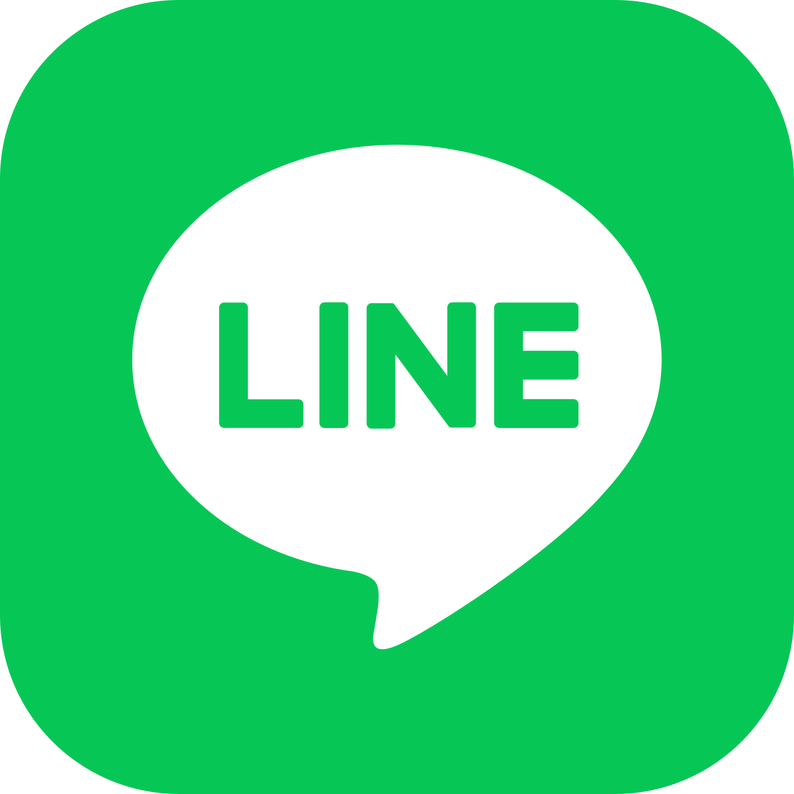

โปรแกรมที่ควรติดตั้งไว้ในเครื่องคอมพิวเตอร์

อ้างอิงรูปภาพ : https://supplychainchannel.co/

1.Acrobat Reader เป็นโปรแกรมที่ถูกใช้ในการอ่านไฟล์ PDF ซึ่งสามารถดาวน์โหลดได้ฟรีจากทางเว็บของอะโดบี
2.Acrobat Professional เป็นโปรแกรมสำหรับสร้างเอกสาร PDF หรือ Documents ต่าง ๆ และยังสามารถใช้อ่านไฟล์เอกสารประเภท Documents และ PDF ได้ด้วย
3.Acrobat 3D เป็นโปรแกรมที่มีความสามารถหลากหลายมาก ทั้งสามารถใช้ดูไฟล์ PDF ,บันทึกไฟล์เอกสารอื่นๆให้เป็นไฟล์ PDF นอกจากนี้แล้วเวอร์ชั่น 3D นี้ ยังเพิ่มความสามารถใหม่ๆ โดยช่วยเพิ่มประสิทธิภาพให้กับงานออกแบบ 3 มิติโดยที่คุณไม่จำเป็นต้องติดตั้งโปรแกรมสร้างชิ้นงานขนาดใหญ่ เช่น AutoCAD คุณก็ สามารถดูภาพจากไฟล์ที่สร้างจากโปรแกรม 3D ได้หลากหลายทั้งที่เป็นไฟล์ 3D CAD และไฟล์สามมิติที่มาจากโปรแกรมอื่นๆ อีกทั้งยังสามารถแปลงไฟล์ให้เป็น 3D ไฟล์ PDF ได้อีกด้วย

เป็นระบบปฏิบัติการในชุดของโปรแกรมสำนักงาน หรือในแบบใหม่ที่เราจะเรียกกันว่า ระบบสำนักงาน เนื่องจากว่าผลิตภัณฑ์ชนิดนี้คือสิ่งที่คนใช้งานคอมพิวเตอร์ทุกๆ คนจะต้องได้สัมผัสอย่างแน่นอน เป็นโปรแกรมที่ถูกสร้างขึ้นมาเพื่อให้สิ่งต่างๆ ทางด้านธุรกิจ การใช้ชีวิต สามารถดำเนินได้อย่างปกติสุข เรียกง่ายๆ ว่าแค่พิมพ์รายงาน คำนวณระบบบัญชีอย่างง่าย การนำเสนองาน ก็จำเป็นจะต้องใช้ระบบไมโครซอฟท์ออฟฟิศด้วยกันทั้งสิ้น พอเป็นเช่นนั้นมันจึงทำให้ระบบการทำงานนี้กลายเป็นระบบการทำงานที่มีความสำคัญอย่างมากต่อผู้ใช้งานทุกๆ คน เรียกว่าเป็นผลิตภัณฑ์ของไมโครซอฟท์ที่คอมพิวเตอร์ทุกเครื่องจะต้องมีเอาไว้

Line (ไลน์) เป็นแอปพลิเคชั่นตัวหนึ่ง ที่ใช้ในการติดต่อพูดคุยสื่อสารกับอีกบุคคลหนึ่ง ซึ่งใช้อินเทอร์เน็ตในการพูดคุยติดต่อสื่อสาร ซึ่งไลน์สามารถใช้แชทหรือใช้โทรหาผู้อื่นได้ โดยไม่เสียค่าใช้จ่ายใดๆ และสามารถโทรได้ตลอดไม่จำระยะเวลา ซึ่งในปัจจุบันสามารถพูดคุยโดยเห็นหน้าซึ่งกันและกันโดยการเปิดกล้องได้แล้ว แต่ทั้งนี้ขึ้นอยู่กับความเร็วของอินเทอร์เน็ตด้วย หากอินเทอร์เน็ตสัญญาณไม่ดี หรือความเร็วไม่เสถียรพอ ก็อาจจะทำให้การติดต่อพูดคุยสื่อสารนั้นไม่ราบรื่น พูดคุยแล้วติดขัด ซึ่งแอปจะขึ้นแจ้งเตือนตลอดว่าเครือข่ายไม่เสถียร ทำให้เราพูดคุยอะไรไปอีกฝ่ายก็จะฟังเราไม่รู้เรื่อง หรือในบางครั้งเราก็จะฟังอีกฝ่ายไม่รู้เรื่องเช่นเดียวกัน